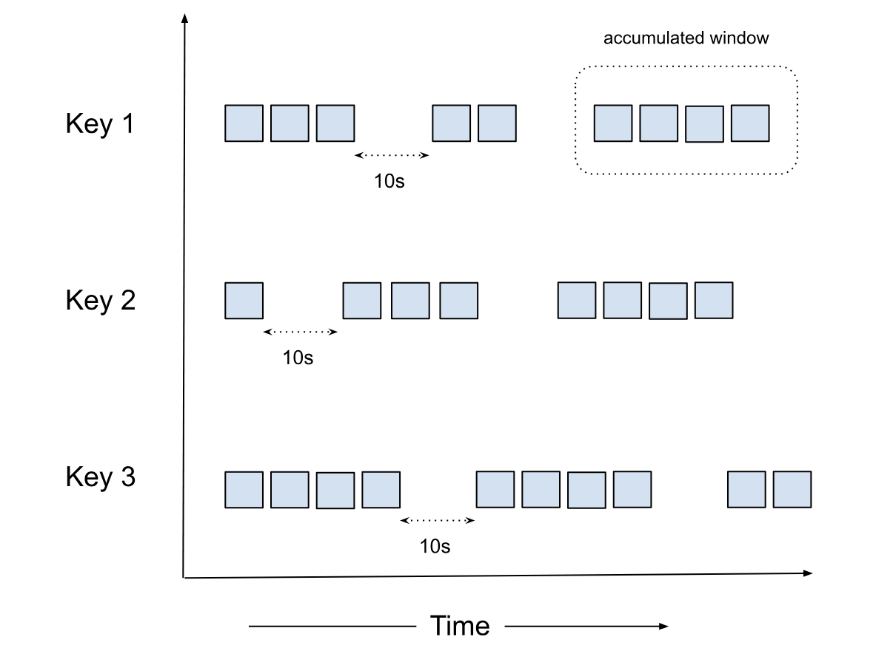

Accumulator¶
Accumulator is a special kind of window similar to a Session Window designed for complex operations like
reordering, custom triggering, and joining multiple ordered streams. Like other windowing strategies (fixed,
sliding, or session windows), the Accumulator window maintains state for each key, but unlike others, it allows for
manipulation of the Datum and emitting them based on custom rules (e.g., sorting) . Accumulator solves is a different
type of problem outside both map/flatmap (one to ~one) and reduce (many to ~one) and instead of Message, we
have to emit back the "manipulated" Datum.

Another difference between the Accumulator and the Session windows is that in Accumulator, there is no concept of window merge.
Why Accumulator?¶
Accumulator is a powerful concept that lets you tap into the raw Datum stream and manipulate not just the order but the
Datum stream itself. It has a powerful semantics where the input and output is a stream of Datum creating a
Global Window. It opens up the possibility of very advanced use cases like custom triggers (e.g., count based triggers
combined with windowing strategies).
func Accumulator(in <-chan Datum) <-chan Datum {
out := make(chan Datum)
go func() {
defer close(out)
var state []Datum
for i := range in {
if WatermarkProgressed(i) {
sort.Slice(state, func(a, b int) bool {
return state[a].Timestamp < state[b].Timestamp
})
for _, d := range state {
out <- d
}
state = nil
}
state = append(state, i)
}
}()
return out
}
def Accumulator(input_stream):
"""
Processes an input stream of Datum objects, maintaining an ordered state.
Emits elements when the watermark progresses.
"""
state = OrderedList()
output_stream = []
for i in input_stream:
# The condition will return True if watermark progresses
if WatermarkProgressed(i):
# Pop all sorted elements and write to output stream
output_stream.extend(state.pop_n())
# Insert the current element into the ordered state
state.insert(i)
return output_stream
struct Accumulator {
state: OrderedList<Datum>,
}
impl Accumulator {
fn new() -> Self {
Self {
state: OrderedList::new(),
}
}
fn process(&mut self, input_stream: &[Datum], output_stream: &mut Vec<Datum>) {
for i in input_stream {
// Check if the watermark has progressed
if WatermarkProgressed(i) {
// Pop all sorted elements and write to output stream
let popped = self.state.pop_all();
output_stream.extend(popped);
}
self.state.insert(i.clone());
}
}
}
import java.util.ArrayList;
import java.util.List;
public class Accumulator {
private OrderedList<Datum> state;
public Accumulator() {
state = new OrderedList<>();
}
public void process(List<Datum> inputStream, List<Datum> outputStream) {
for (Datum i : inputStream) {
// Check if the watermark has progressed
if (WatermarkProgressed(i)) {
// Pop all sorted elements and write to output stream
List<Datum> popped = state.popAll();
outputStream.addAll(popped);
}
state.insert(i);
}
}
}
Considerations¶
The Accumulator window is powerful but should be used carefully as it can cause pipeline stalling if not configured properly.
Factors to consider¶
Please consider the following factors when using the Accumulator window (not comprehensive):
- For high-throughput scenarios, ensure adequate storage is provisioned
- The timeout should be set based on the expected data arrival patterns and latency requirements
- Consider the trade-off between data completeness (longer timeout) and processing latency (shorter timeout)
- Please make sure Watermark is honored when publishing the data, else completeness and correctness is not guaranteed
Data Retention¶
To ensure there is no data loss during pod restarts, the Accumulator window replays data from persistent storage. The
system stores data until Outbound(Watermark) - 1, which means it keeps the minimum necessary data to ensure correctness
while managing resource usage.
Constraints¶
- For data older than
Outbound(Watermark) - 1, users need to bring in an external store and implement replay on restart - Data deletion is based on the
Outbound(Watermark)
Few general use cases¶
- Stream Joining: Combining multiple ordered streams into a single ordered output
- Event Reordering: Handling out-of-order events and ensuring they're processed in the correct sequence
- Time-based Correlation: Correlating events from different sources based on their timestamps
- Custom Sorting: Implementing user-defined sorting logic for event streams
- Custom Triggering: Triggering actions based on specific conditions or events within the stream
Configuration¶
vertices:
- name: my-udf
udf:
groupBy:
window:
accumulator:
timeout: duration
NOTE: A duration string is a possibly signed sequence of decimal numbers, each with optional fraction and a unit suffix, such as "300ms", "1.5h" or "2h45m". Valid time units are "ns", "us" (or "µs"), "ms", "s", "m", "h".
timeout¶
The timeout is the duration of inactivity (no data flowing in for a particular key) after which the accumulator state
is removed. This helps prevent memory leaks by cleaning up state for keys that are no longer active.
Note: The determination of whether a key is inactive, or has timed out, is based on the watermark progressing. In order to close the accumulator window, we compare this timeout against the watermark. If the watermark progression for the vertex has stalled for some reason, eg: due to one of the sources idling in a multi-source setup, the timeout may not be triggered without configuring idle watermark detection. Currently, in such cases, the accumulator window may not close as it continues to hold on to the state for the key while ingesting more data, hoping to progress watermark with the next datum. This might lead to OOM situations.
How It Works¶
The Accumulator maintains a single, per-key global window. The window opens when the first Datum for a key arrives
and, unlike fixed, sliding, or session windows, it has no fixed end time — it stays open, accumulating (and optionally
re-emitting) Datums, until we don't receive any more similar keyed events for timeout duration.
For each key, the user-defined function typically:
- Maintains an ordered list of elements for each key (for example, sorted by event time)
- When the watermark progresses, pops all elements that are now behind the watermark and writes them to the output stream
- Inserts newly arrived elements into the ordered list based on their event time
- Flushes any remaining buffered elements when the window is closed (see How windows are closed)
Unlike both map or reduce operations, where Datum is consumed and Message is returned, for reordering with the
Accumulator, the Datum is kept intact.
How windows are closed (internal EOF)¶
Accumulator windows are closed by numaflow-core, not by the user-defined function (similar to other reduce operations). A window is closed once the
watermark advances past the latest event time seen for that key plus the configured timeout — in other
words, once the key has been inactive for timeout, as measured against the watermark. (As described under
timeout, this is why the watermark must keep progressing: a stalled watermark can keep a window open
indefinitely and lead to OOM.)
When core closes a window, it sends an internal close / end-of-stream (EOF) signal to the UDF for that key. This signal surfaces differently in each SDK, but it always means the same thing: no more input will arrive for this window, so flush whatever you have buffered.
After the UDF has handled this signal and returned, the SDK sends an EOF response back to core for that window.
This EOF response is what tells core the window is fully processed, so that it can garbage-collect the window's
persisted state (WAL), release the tracked messages, and let the watermark advance downstream. Data is retained until
Outbound(Watermark) - 1 (see Data Retention).
Dropping or skipping messages¶
Because the Accumulator is a reduce-family operation — a stream of Datum in, a stream of Datum out — there is no
requirement for a one-to-one mapping between input and output. If you do not want to forward a particular Datum,
simply do not emit it; you do not need to emit an explicit "drop" message to account for it.
Behavior change in v1.8.1
Before v1.8.1, an accumulator window's persisted state was cleaned up only once the UDF emitted at least one
output message for that window. A UDF that filtered out (dropped) every message for a window would leave that
window's state uncollected, causing unbounded memory and WAL growth. This is why an explicit drop helper (for
example, MessageToDrop / to_drop()) was previously considered necessary — to "account for" every input.
As of v1.8.1 (numaflow#3461), window cleanup is driven by the
internal EOF described above and no longer depends on the UDF emitting
output. You can safely skip messages by simply not emitting them; the window and its state are cleaned up
automatically once the window closes after the timeout. Explicitly emitting drops is no longer required. (Some
SDKs, such as Python, still expose a to_drop() helper, but it is optional and unnecessary for cleanup.)
Example¶
Here's an example of using an Accumulator window to join and sort two HTTP sources:
apiVersion: numaflow.numaproj.io/v1alpha1
kind: Pipeline
metadata:
name: simple-accumulator
spec:
vertices:
- name: http-one
scale:
min: 1
max: 1
source:
http: {}
- name: http-two
scale:
min: 1
max: 1
source:
http: {}
- name: accum
udf:
container:
# stream sorter example
image: quay.io/numaio/numaflow-go/stream-sorter:stable
groupBy:
window:
accumulator:
timeout: 10s
keyed: true
storage:
persistentVolumeClaim:
volumeSize: 1Gi
- name: sink
scale:
min: 1
max: 1
sink:
log: {}
edges:
- from: http-one
to: accum
- from: http-two
to: accum
- from: accum
to: sink
In this example:
- We have two HTTP sources (
http-oneandhttp-two) that produce ordered streams - The
accumvertex uses an Accumulator window with a timeout of 10 seconds - The accumulator joins and sorts the events from both sources based on their event time
- The sorted output is sent to a log sink
Note: Setting readBatchSize: 1 helps maintain the ordering of events in the input streams.
Check out the snippets below to see the UDF examples for different languages:
func (s *streamSorter) Accumulate(ctx context.Context, input <-chan accumulator.Datum, output chan<- accumulator.Message) {
for {
select {
case <-ctx.Done():
log.Println("Exiting the Accumulator")
return
case datum, ok := <-input:
// this case happens due to timeout
if !ok {
log.Println("Input channel closed")
return
}
log.Println("Received datum with event time: ", datum.EventTime().UnixMilli())
// watermark has moved, let's flush
if datum.Watermark().After(s.latestWm) {
s.latestWm = datum.Watermark()
s.flushBuffer(output)
}
// store the data into the internal buffer
s.insertSorted(datum)
}
}
}
class StreamSorter(Accumulator):
def __init__(self):
_LOGGER.info("StreamSorter initialized")
self.latest_wm = datetime.fromtimestamp(-1)
self.sorted_buffer: list[Datum] = []
async def handler(
self,
datums: AsyncIterable[Datum],
output: NonBlockingIterator,
):
_LOGGER.info("StreamSorter handler started")
async for datum in datums:
_LOGGER.info(
f"Received datum with event time: {datum.event_time}, "
f"Current latest watermark: {self.latest_wm}, "
f"Datum watermark: {datum.watermark}"
)
# If watermark has moved forward
if datum.watermark and datum.watermark > self.latest_wm:
self.latest_wm = datum.watermark
_LOGGER.info(f"Watermark updated: {self.latest_wm}")
await self.flush_buffer(output)
self.insert_sorted(datum)
_LOGGER.info("Timeout reached")
await self.flush_buffer(output, flush_all=True)
/// insert_sorted will do a binary-search and inserts the AccumulatorRequest into the sorted buffer.
fn insert_sorted(sorted_buffer: &mut Vec<AccumulatorRequest>, request: AccumulatorRequest) {
let event_time = request.event_time;
// Find the insertion point using binary search
let index = sorted_buffer
.binary_search_by(|probe| probe.event_time.cmp(&event_time))
.unwrap_or_else(|e| e);
sorted_buffer.insert(index, request);
}
@Slf4j
@AllArgsConstructor
public class StreamSorterFactory extends AccumulatorFactory<StreamSorterFactory.StreamSorter> {
public static void main(String[] args) throws Exception {
log.info("Starting stream sorter server..");
Server server = new Server(new StreamSorterFactory());
// Start the server
server.start();
// wait for the server to shut down
server.awaitTermination();
log.info("Stream sorter server exited..");
}
@Override
public StreamSorter createAccumulator() {
return new StreamSorter();
}
public static class StreamSorter extends Accumulator {
private Instant latestWm = Instant.ofEpochMilli(-1);
private final TreeSet<Datum> sortedBuffer = new TreeSet<>(Comparator
.comparing(Datum::getEventTime)
.thenComparing(Datum::getID)); // Assuming Datum has a getUniqueId() method
@Override
public void processMessage(Datum datum, OutputStreamObserver outputStream) {
log.info("Received datum with event time: {}", datum.toString());
if (datum.getWatermark().isAfter(latestWm)) {
latestWm = datum.getWatermark();
flushBuffer(outputStream);
}
sortedBuffer.add(datum);
}
@Override
public void handleEndOfStream(OutputStreamObserver outputStreamObserver) {
log.info("Eof received, flushing sortedBuffer: {}", latestWm.toEpochMilli());
flushBuffer(outputStreamObserver);
}
private void flushBuffer(OutputStreamObserver outputStream) {
log.info("Watermark updated, flushing sortedBuffer: {}", latestWm.toEpochMilli());
while (!sortedBuffer.isEmpty() && sortedBuffer
.first()
.getEventTime()
.isBefore(latestWm)) {
Datum datum = sortedBuffer.pollFirst();
assert datum != null;
outputStream.send(new Message(datum));
log.info("Sent datum with event time: {}", datum.getEventTime().toEpochMilli());
}
}
}
}